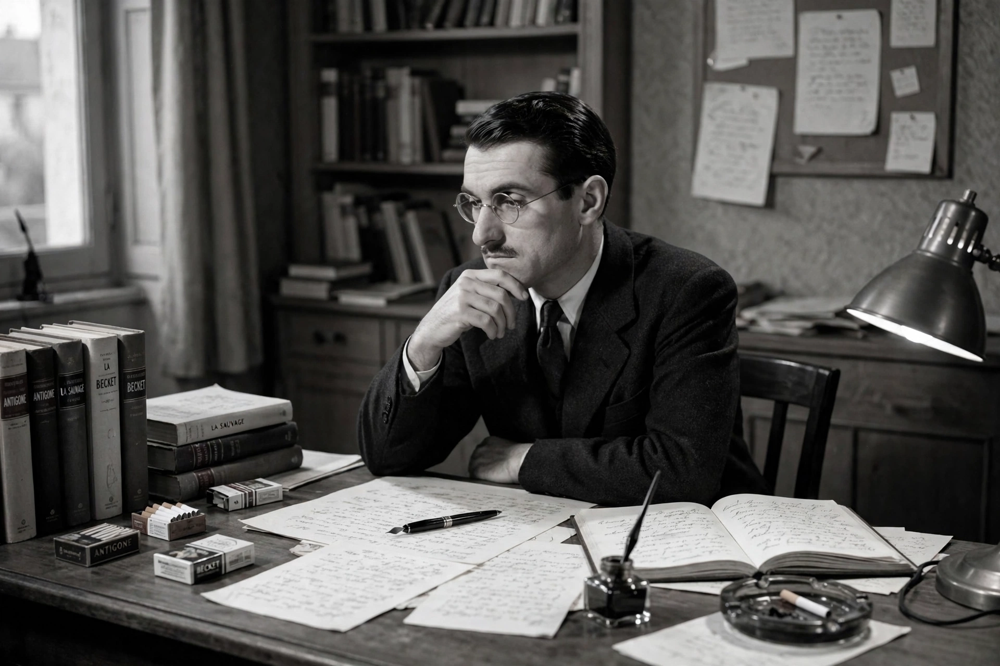

| Jean Anouilh | |
|---|---|
 Anouilh in his study | |
| Born | 23 June 1910, Bordeaux, France |
| Died | 3 October 1987 (aged 77), Lausanne, Switzerland |
| Occupation | Playwright, screenwriter |
| Notable works | Antigone (1944); L'Alouette (1953); Becket (1959) |
| Spouse | Monelle Valentin |
Jean Marie Lucien Pierre Anouilh (23 June 1910 – 3 October 1987) was a French dramatist and screenwriter whose career spanned five decades. Though his work ranged from high drama to absurdist farce, Anouilh is best known for his 1944 production of Antigone, an adaptation of Sophocles' classical drama that was seen as an attack on Marshal Pétain's Vichy government. His plays, which he classified himself as "pink," "black," "brilliant," "grating," and "costumed," typically pit an uncompromising idealist against a corrupt, pragmatic world.
Anouilh was born in Bordeaux to a tailor father and a violinist mother who played in a casino orchestra. He studied law briefly at the Sorbonne, worked in an advertising agency writing copy, and served as secretary to the actor-director Louis Jouvet, whom he idolized. A decisive influence was Jean Giraudoux, whose theatre of poetic language and classical myth Anouilh championed. His first success, L'Hermine (1932), was followed by the "pièces roses" (pink plays), light romantic comedies including Le Bal des voleurs (1938), and by the darker "pièces noires" (black plays) such as Eurydice (1942).
First performed in occupied Paris in February 1944, Antigone reworks Sophocles: Anouilh's Antigone refuses compromise on principle, while his Creon is a weary, lucid pragmatist who argues the case for order and dirty hands so persuasively that audiences have debated ever since which figure the play endorses. Passed by the German censors as a Greek tragedy, it was widely read by Resistance audiences as a call to refuse collaboration. It remains Anouilh's most famous and most revived work.
The postwar "pièces brillantes" and "pièces grinçantes" (grating plays) attacked postwar French society and wartime myth-making; L'Alouette (1953), about Joan of Arc, and Becket ou l'honneur de Dieu (1959), about Thomas Becket and Henry II — filmed in 1964 with Richard Burton and Peter O'Toole — were international triumphs. Anouilh defended the collaborationist writer Robert Brasillach against execution in 1945, a stance that marked him controversially. Increasingly reclusive, he lived much of his later life in Switzerland and died in Lausanne in 1987.
Anouilh's theatre is literary, ironic, and formally classical: tightly constructed plots, debates between opposed principles, anachronism in the historical plays, and a recurring opposition between purity — youth, love, refusal — and the compromises of adult power and money. Critics have placed him between Giraudoux and the absurdists; his influence on postwar French and English-language drama is substantial.